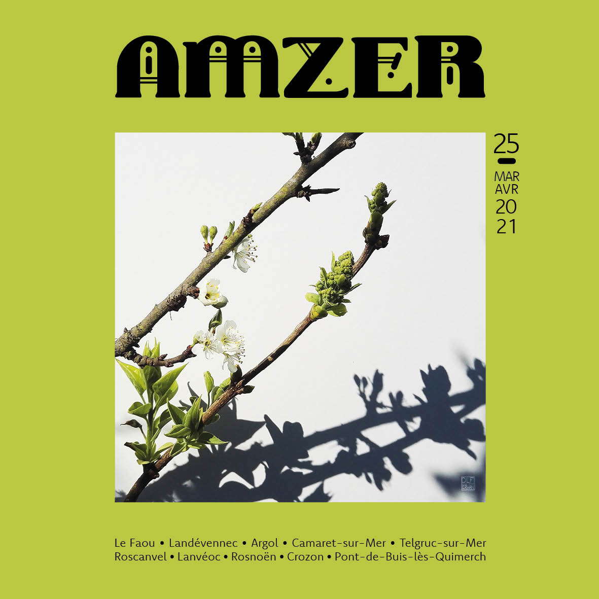

Ce site est en cours de construction. En attendant...
Découvrez Amzer n°25 - Mavril 2021

Pour lire la version numérique, c'est par
là
Édito - Gemmes
Timides et délicats, ils attendent pour sortir que les jours rallongent, que le soleil réchauffe un peu les sols. Comme
des points colorés sur le bois sombre des branches, un vert tendre apparaît, microcosme de l’arbre qui s’épanouit. Des
feuilles minuscules, enroulées sur elles-mêmes, se déploient alors doucement, se déchiffonnent, s’étirent, se tendent
vers le ciel pour profiter pleinement des rayons bienfaisants. Elles se gorgent de sève, nectar de la Terre, concentré
d’énergie par qui tout est possible. Et, peu à peu, s’étend la vie sur les rameaux féconds...
Qu’il est bon de voir revenir les bourgeons, signes avant-coureurs du retour du Printemps, symboles de l’espoir et de
jours meilleurs...